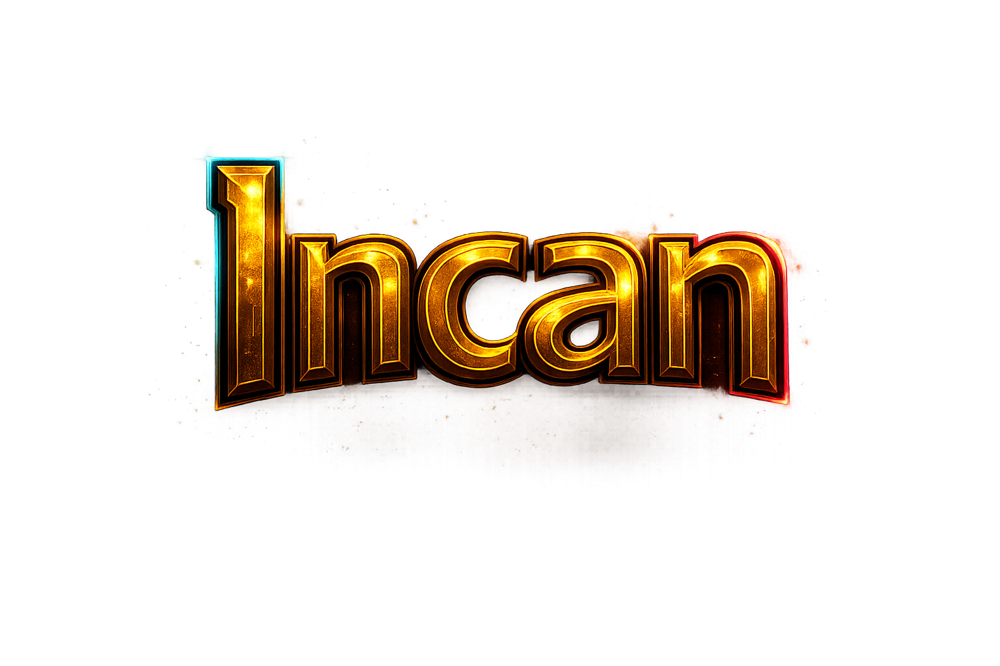

Final Style Guide
Incapunk.
This page is the handoff artifact for the documentation theme. It is not a fake docs page and it is not a marketing mockup. The surrounding prose exists to explain the style system itself, so a frontend developer can start breaking it into reusable parts for a real MkDocs Material implementation.
Hero surfaces
The style language is not only for docs chrome. It also needs to support the public-facing landing surface where the system first established its forged gold, graphite, and prismatic edge behavior. That is where the CTA hierarchy and the wordmark treatment matter most.
The hero should remain structurally cleaner than the docs body: fewer boxes, more atmosphere, and stronger hierarchy between the primary and secondary actions. A quiet secondary action should not compete with the luminous gold CTA.
Hero language
Forged interfaces for executable systems.
The hero surface is where Incapunk can be louder: illuminated wordmark, atmospheric chroma, and stronger button hierarchy. The structure still matters more than effects, but this is the one place where the style can lean cinematic without compromising the docs system.

Principles
Incapunk is forged rather than glossy. The base is dark graphite, the structure is warm metal, and the chroma is restrained cyan and magenta energy used as edge behavior, not as a neon blanket over the interface.
The north star is premium documentation chrome: serious, authored, and a little strange. The system should feel more like an artifact or instrument panel than a generic SaaS dashboard, but it still needs to behave like a docs site first.
What it should feel like
- Forged gold rails over graphite surfaces.
- Ornament concentrated in frames and seams.
- Cyan and magenta used as subtle edge energy.
- Readable as docs, not as a landing page.
What to avoid
- Blob-like chroma glows detached from structure.
- Too many rounded, floating cards.
- Bronze-heavy body text that hurts legibility.
- Page-specific ornament that can’t scale across docs.
Header and rails
The header should feel built, not merely bordered. Gold defines the frame. Cyan biases the left edge of the top rail, magenta biases the right edge of the lower rail. Those chroma accents should live inside the linework rather than floating near it.
Horizontal separators follow the same rule. They are forged rails with soft edge fade, not detached ornaments. The chroma should tint the ends and then disappear into transparency.
Chrome rule
If a decorative element cannot be tied back to a real structural edge, it probably does not belong. This was the recurring failure mode with early dividers, admonition corners, and table seams.
Typography
Headlines carry the material treatment. They can go warm and forged because they are rare and structural. Body copy should remain cooler and more neutral than the rails around it. If the prose becomes too gold, readability drops fast and the page starts feeling muddy.
Inline code, emphasis, and breadcrumb labels
should remain visible, but secondary to actual headings and component
borders.
Lists
Lists are a first-class docs pattern. They should work both as plain prose lists and as denser grouped callouts. RFC-style policy lists live inside the prose flow; checklist cards are optional and used only when grouping adds real value.
Inline bullets
- The vertical guide rail should be subtle and structural.
- Markers should feel forged, not like default browser bullets.
- Nested bullets can shift cooler to keep hierarchy readable.
- List styling should remain calmer than admonitions.
Ordered flow
- Use the docs flow as the baseline, not boxed cards.
- Reserve stronger framing for admonitions, tables, and code.
- Let the numbering plaques carry the extra ceremony.
- Keep the prose itself cool enough to read at length.
Admonitions
Admonitions inherit the gold frame language from the CTA buttons, but they are quieter and split clearly into header and body. The outer frame is the event; the inner surface should remain restrained.
The implementation target is Material for MkDocs, so the theme needs to cover the full supported admonition taxonomy, not just one pleasant note/warning pair.
Note
Default guidance block for structural observations and small caveats.
Abstract
Use the calmer graphite treatment for summaries and conceptual framing.
Info
Cyan-leading rails can carry factual detail without turning neon.
Tip
Helpful guidance should read bright and constructive, but still controlled.
Success
Completion states can go greener while preserving the forged frame logic.
Question
Interrogative callouts can tolerate a cooler violet-cyan bias.
Warning
Warnings should be warmer and clearer than notes, not merely louder.
Failure
Failure states want a stronger ember-to-crimson edge without cartoon danger.
Danger
Reserve the hottest red treatment for genuinely destructive or unsafe behavior.
Bug
Bug callouts can lean magenta-red to feel diagnostic rather than celebratory.
Example
Examples can carry the prismatic family more visibly than ordinary prose.
Quote
Quotes should be quiet and authored, with graphite leading over gold.
Code blocks
Code is one of the strongest parts of the system because the darker interior lets the token colors breathe. Headers should feel like metal caps, but the actual code surface should stay calm and readable.
from std.async.time import sleep
def accent_for(edge: str) -> str:
if edge == "left":
return "cyan"
return "magenta"
async def preview_theme() -> str:
await sleep(0.2)
return accent_for("left")
def main() -> None:
println("Rendering Incapunk preview...")Tables
Tables should feel integrated into the same system as admonitions and code, but they cannot become overly ornate. The header needs stronger separation from the body. The frame needs continuous rails. Chroma should support the seam and outer edge behavior, not fragment it.
| Element | Role | Guidance | Failure mode |
|---|---|---|---|
Header band |
Separation | Use a darker cap and one continuous forged seam. | Header visually blends into the table body. |
Outer frame |
Containment | Keep the rails continuous across the corners. | Chroma terminates abruptly into broken corners. |
Row rules |
Scan support | Gold first, with a faint cyan/magenta bias at the ends. | Rows become flat gray enterprise grid lines. |
Typography |
Legibility | Keep body copy cooler than the frame and headings. | Everything turns bronze and starts looking dirty. |
Reusable component language
Header chrome
global
Full-width gold/chroma rails, serif nav, and a darker graphite fill. This is theme chrome, not page content.
Content primitives
docs
Admonitions, tables, code frames, list patterns, and section rails should all read like one family without requiring custom markdown per page.
MkDocs Material implementation guidance
This system should be implemented as a theme layer, not as a collection of handcrafted page templates. The right order is global chrome first, shared content primitives second, and only then small structural overrides where Material cannot express the intended layout cleanly enough.
CSS-first scope
- Typography and color tokens.
- Header rails and nav styling.
- Admonitions, tables, code blocks, lists.
- Sidebar, TOC, and horizontal rules.
Template override scope
- Header structure and top chrome.
- Logo placement and nav grouping.
- Search area treatment.
- Nothing page-specific if it can be avoided.
Constraints and non-goals
- Do not implement custom RFC frontmatter.
- Do not turn ordinary prose sections into floating cards.
- Do not use chroma unless it is structurally tied to a line or seam.
- Do not sacrifice legibility for warmer text or heavier ornament.